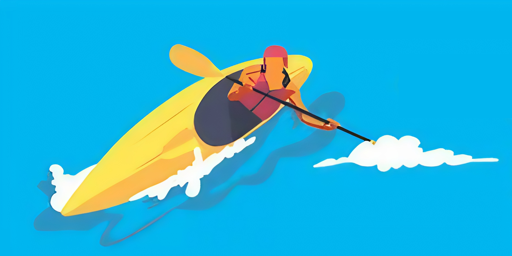

Каяк у русі
Рух на каяку — це важлива частина веслувального процесу, яка включає в себе використання правильних технік для досягнення максимального контролю та ефективності під час плавання. Ось кілька основних аспектів руху на каяку: Веслування: Основний рух на каяку здійснюється через використання весел. Кожне весло має два леза (ліве та праве), і вони використовуються для створення тяги і напрямку. Техніка веслування залежить від типу каяка та умов води. Існують різні типи гребків: Прямий гребок (forward stroke): основний рух для просування вперед, коли весло розташоване паралельно каяку. Зворотний гребок (reverse stroke): використовується для зупинки або маневрування назад. Гребок на поворот (sweep stroke): застосовується для здійснення повороту або змінювати напрямок руху. Техніка корпусу: Важливою частиною руху є правильне використання корпусу. Під час гребка необхідно використовувати не тільки руки, а й торс. Повороти корпусу допомагають збільшити силу гребка і зберегти баланс. Баланс і стабільність: Для того, щоб каяк не перевернувся, важливо підтримувати правильний баланс. Це досягається через контроль за вагою тіла, переміщенням ваги в різні частини каяка і правильне розташування в корпусі. Для підтримання стабільності рекомендується злегка нахилятися вперед під час веслування. Маневрування: Навіть на спокійних водах важливо знати, як маневрувати каяком, щоб уникнути перешкод або обертатися навколо осі. Це включає в себе різні стратегії маневрування, такі як коригувальні гребки або використання весла для зміщення напрямку. Підвищення швидкості: Для збільшення швидкості важливо використовувати техніки для зменшення опору води, правильне розподілення енергії під час кожного гребка, а також оптимізувати рухи для досягнення ефективності. Правильна техніка руху на каяку не тільки підвищує ефективність, але й знижує ймовірність травм. Важливо тренуватися під керівництвом інструкторів або досвідчених веслярів, щоб освоїти основи та техніки, що відповідають особливостям водного середовища та типу каяка.
